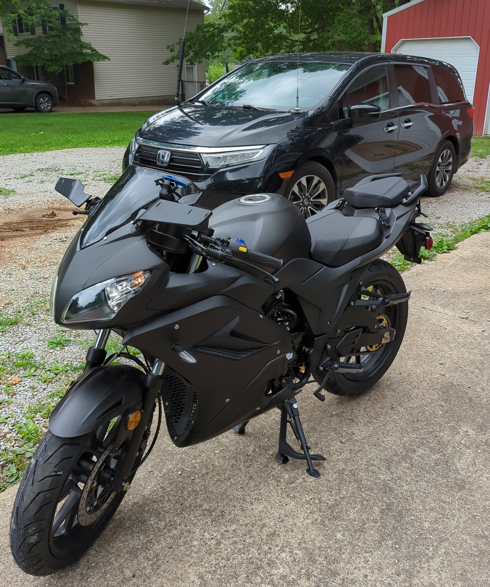

Motorcycle

UPDATES:
I currently have about 115 miles on the bike and thought I'd post some updates.
First, the stock carb sucks, which I was aware of before I made my purchase. The issue is that the air/fuel mixture screw is completely blocked off. You only have the idle adjustment screw. The pilot and main jets are not able to be changed either. This created an issue where I needed to use full choke in order to get it to run well. If I adjusted the idle properly, then the engine would bog at cruising RPMs, making it impossible to reach a speed over 45 mph. So I went ahead an installed a Nibbi PE22 Carburetor and 48mm open air filter. This left two hoses from the removed airbox dangling. One is the crankcase breather hose and one is part of the PAIR (similar to EGR, and part of emissions control) system. The crankcase breather hose is important to keep open, but also you don't want dirt entering this way. So I ordered a small air filter to prevent this. The other hose needs removed or blocked off, so I removed it and used a steel washer and high-temp JB Weld to cover the remaining hole.
I also decided to upgrade from the 14-tooth front sprocket which comes stock to a 17-tooth sprocket. This resulted in the chain being slightly to short, so I ordered a 130 link, heavy duty replacement. This will give me slightly more top-end speed at the cost of low-end torque, but the Nibbi carb should help with that as well.The stock mirrors kinda suck, so I went through a couple of replacements before landing on these mirrors. The are perfect for this bike and give you a wider view of the road behind you than the stock ones did.
Finally, a couple of minor upgrades I did was a magnetic oil plug and an anti-skid kickstand pad. I picked up some which you just throw down on the ground as well, but I like the idea of a permanent one, as I know me and I will be forgetting the other ones contantly. ;)
After the break-in period is done, there is another upgrade I plan on doing. I plan on adding an engine oil cooler to help extend the life of the engine by lowering operating temps.
One modification that has been recommended is to replace the complete exhaust system with a high-flow exhaust system to take better advantage of the new carb. I guess the stock header pipe restricts flow, so even cutting the stock muffler and replacing it with a high-flow slip-on one won't improve performance much. This one is less important to me because, while the mods I've done and have planned improve performance, they also improve reliability so that the cheap Chinese bike lasts a good, long while. I may eventually do the exhaust later if I decide I need to get a little more performance out of this little 125cc engine, but it is certainly not a priority at this time.
Also note: none of the links are affiliate links. They are links to what I've bought so far and have been happy with.
Oh. One last link. I had heard the stock sparkplug sucked, so I replaced it with this one before ever starting the bike up.
Tags: motorcycle, x-pro, bd125-11, ninja, 125cc
 times
times